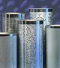
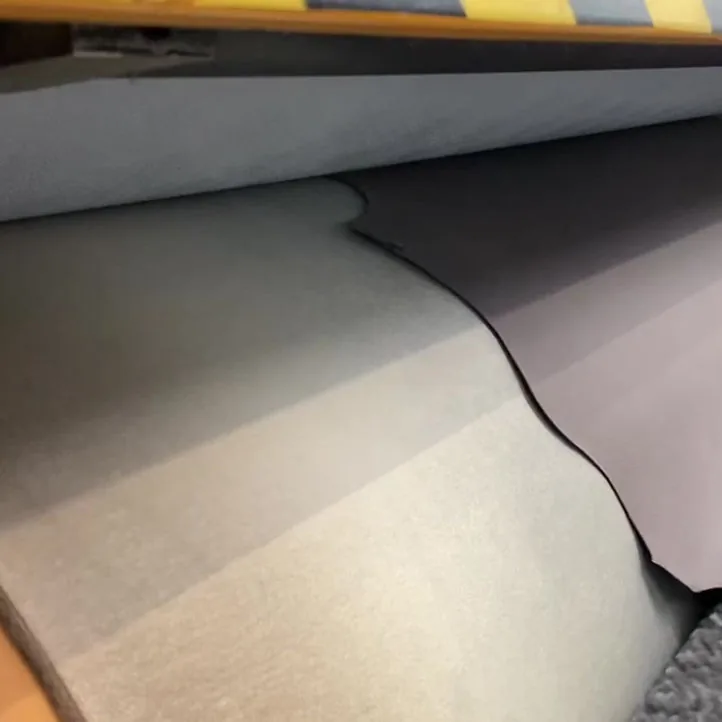
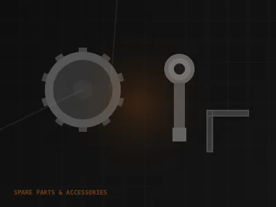

Embossing Press
Parts & Tooling
Engraved embossing plates and rollers, embossing felts, Teflon belts, rubber counter rollers and seal kits for leather embossing presses — plate and rotary. Standard grains in stock, custom patterns engraved to your design, every part matched to your machine.

Any Grain, Any Pattern
Standard grains in stock and fully custom plates and rollers engraved to your own design, logo or hide sample — the texture your collection needs, reproduced exactly.
Reduce Downtime
Keep felts, Teflon belts, counter rollers and seal kits on the shelf. When the press marks the grain or loses pressure, swap the wear part and your finishing line is back in minutes, not days.
Matched To Your Machine
Plates, rollers, felts, belts and seal kits identified against your exact plate or roller size, brand and model — original and compatible, with no minimum order quantity.
Tooling & Parts for
Leather Embossing Presses
Kymera Group supplies tooling, spare parts and consumables for the embossing presses used in tanneries to print grain patterns, textures and logos onto finished leather. On a plate press the hide is pressed under a heated engraved plate; on a continuous rotary press an engraved roller prints the pattern onto the leather web as it runs through the machine. Both work under heat and high pressure, and both depend on a sound felt, a clean Teflon facing and accurate engraving.
From the engraved plates and rollers that carry the pattern, through the embossing felts, Teflon belts and rubber counter rollers that touch the leather every cycle, to the heating elements and seal kits that keep the press at temperature and pressure — we source the right component for your specific machine. Tell us your brand, model and plate or roller size, and we'll match the part, confirm the specification and quote it for you.

The Complete
Embossing Press Catalogue
From engraved plates and rollers to embossing felts, Teflon belts, counter rollers and seal kits — everything your plate or rotary embossing press needs, matched to your machine and quality-checked before dispatch.
Engraved Embossing Plates
The tooling that carries the pattern. Engraved plates transfer a grain, texture or logo onto the leather under heat and pressure. Standard grains in stock and custom plates engraved to your own design or sample.
Request a QuoteEmbossing Rollers
Engraved cylinders for continuous (rotary) embossing presses — print the grain onto the leather web as it runs through the machine. New, re-engraved and custom textures to your dimensions.
Request a Quote
Embossing & Ironing Felts
Wool and synthetic felts that cushion the leather against the plate or roller, spread pressure evenly and give a clean, uniform impression. Cut to your machine size. View the full felt range →
View Felts
Teflon Belts & Sheets
Non-stick, heat-resistant PTFE belts and sheets that protect the heated plate or roller and the grain — stop the leather sticking and keep the working surface clean through every embossing cycle.
Request a Quote
Rubber Counter Rollers
The resilient pressure roller that backs the engraved roller in a rotary press, applying even pressure across the leather web. Supplied new or re-covered to your original diameter and hardness.
Request a Quote
Heating Elements & Seal Kits
Heating elements, hydraulic seal kits, bearings and wear parts for plate and rotary embossing presses — tell us your brand and model and we'll identify the correct part so the press holds heat and pressure.
Request a QuoteEmbossing Leather, Step by Step
In finishing, the embossing press prints a grain, texture or logo onto the leather under heat and pressure — on a plate press shot by shot, or on a rotary press as a continuous web. Here is the cycle on the production floor.
Heat the Engraving
The engraved plate or roller is brought up to temperature, with the Teflon facing protecting the engraving and the leather grain.
Feed the Hide
The finished hide is laid on the felt-cushioned bed or fed into the nip, grain up toward the engraved plate or roller.
Press & Print
Plate or roller closes under high pressure; the felt and counter roller spread the load evenly so the engraving prints cleanly into the grain.
Release & Unload
The pressed leather is lifted clear or runs out of the machine — pattern crisp, grain compacted and the finish fixed, ready for the next stage.
The Right Tooling,
The Right Grain
A worn felt, marked Teflon, a tired counter roller or a faded engraving show up immediately — shallow grain, uneven impression and marked leather. We match every plate, roller, felt, belt and seal kit to your exact machine so the press prints a clean, full pattern again.
- Engraved plates and rollers — standard grains and custom patterns to your design
- Embossing felts and Teflon belts cut to your plate or roller size
- Rubber counter rollers supplied new or re-covered to original diameter
- Original and compatible parts, matched to your brand and model
- No minimum order quantities — single items or full kits

Your Questions,
Answered
What is an embossing press used for in a tannery?
An embossing press transfers a grain pattern, texture or logo onto finished leather under heat and pressure. The hide is pressed between an engraved plate (plate press) or an engraved roller (continuous rotary press) and a felt-cushioned bed, printing the engraving into the surface to imitate a natural grain, create a fantasy texture or apply a brand pattern.
What is the difference between a plate and a rotary embossing press?
A plate (hydraulic) embossing press presses one engraved plate down onto a stationary hide, embossing it one shot at a time. A rotary or continuous press carries an engraved roller that prints the pattern onto the leather web as it runs through the machine, for higher, continuous output. We supply tooling, felts and spare parts for both.
Can you make custom engraved plates and rollers?
Yes. We supply engraved embossing plates and rollers that transfer a grain, texture or logo onto the leather, and we engrave custom plates and rollers to your own design or sample. Send us the pattern or hide sample to reproduce and the plate or roller dimensions of your press.
What are embossing felts and Teflon belts for?
The felt is the resilient cushion that backs the leather against the plate or roller — it spreads pressure evenly, absorbs irregularities and gives a clean, uniform impression. The Teflon (PTFE) belt or sheet is a non-stick, heat-resistant facing that stops the grain sticking to the heated surface and keeps the plate or roller clean. Both are wear items replaced periodically.
Which embossing press brands do your parts fit?
Our embossing tooling, felts and spare parts are compatible with the most widespread brands, including Mostardini, RotoPress, Bergi, Nanopress and Gemata. Tell us your machine brand and model and we will confirm the correct part for you.
Do you supply counter rollers and seal kits, and is there a minimum order?
Yes — we supply rubber counter rollers (new or re-covered to original diameter), plus seal kits, bearings and heating elements that keep the press at pressure and temperature. There is no minimum order quantity: a single plate, one felt or a complete consumables package, supplied with the same care.
Send Your Request
Tell us your embossing press brand, model and plate or roller size, the part or grain pattern you need and the quantity — we'll come back to you with the right component, the right price, and a clear lead time.